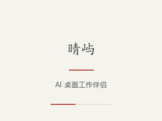
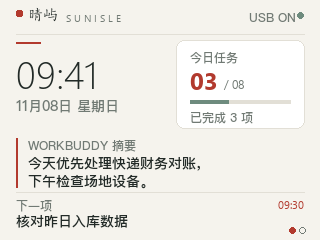
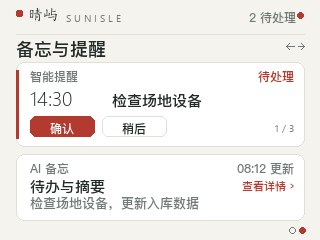
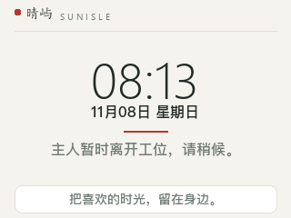
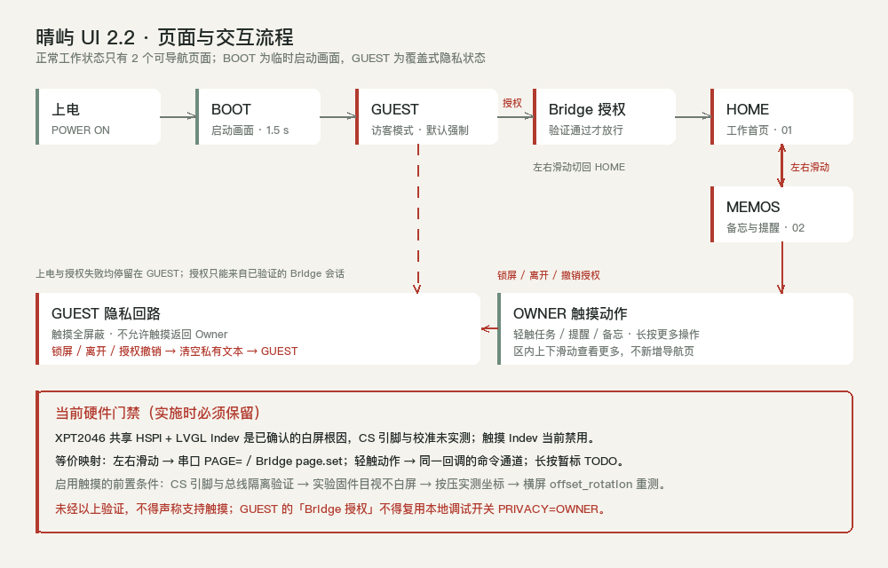

Intelligent Desk Companion · 320 × 240 横屏 · LVGL 8.3.11 · 宣纸 / 墨 / 朱砂单一色板 · 8 px 栅格 · 四画面





BG 宣纸#F5F3EDSURFACE 卡面#FFFFFFINK 墨#222A27MUTED 淡墨#717A74BRAND 朱砂#B23A2ETECH 青瓷#6E8B7ELINE 细线#E2DFD68 px 栅格 / 16 px 页边距 / 288 px 内容区 / 14 px 卡内边距 / 统一 8 px 圆角 + 1 px 细线描边 / 状态组右对齐。四画面共用一套组件，无阴影、无彩色块铺底。
自研子集字体按 TTF 统一基线 + 真实 ink bbox（修复「歪歪扭扭」）。四级层级：56 px Light 主数值 / 28 px 楷标题（仅开机品牌）/ 16 px 提示 / 14 px 正文。
字库瘦身 + 删三页后固件约 1.20 MB / app0 91%，余量约 100 KB。全部字面为 8bpp alpha、真实墨迹框，不再用逐字居中。
LVGL indev 仍是白屏根因，保持禁用。SPI / I²C / 独立 SPI / 117 组 MISO×CS 矩阵均未取到 12 位 ADC 值，缺的是板上触摸引脚定义，交互暂走串口等价命令。
上电 BOOT → GUEST 强制默认；私有 setter 在 Guest/BOOT 丢弃文本；只有已验证 Bridge 会话可恢复 Owner。按规范保留，不新增触摸返回路径。
setRotation(1)、20 MHz HSPI、LCD_PIXEL_SWAP、GPIO 全部保持；RGB565 会让白色回读偏 #F8FCF8，验收允许 ±8/通道偏差。